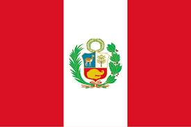

Thiago Mello
About Me
My name is Thiago Mello, and I am a student in the WDD 131 course. I am passionate about web development and look forward to learning more about dynamic web fundamentals.
Peru

Peru is a country in South America known for its rich history, diverse landscapes, and ancient cultures. It is home to Machu Picchu, the Andes Mountains, and part of the Amazon rainforest.